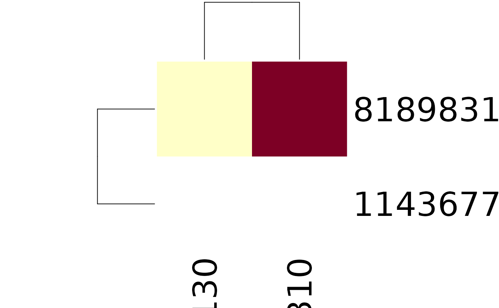

R/connectivity.R
neuprint_skeleton_connectivity_matrix.RdGet an adjacency matrix for the synaptic connectivity between nat::neuron/nat::neuronlist objects. This function does not query a neuPrint server.
It uses information on synaptic connectivity stored in a nat::neuron/nat::neuronlist object, as read from neuPrint by neuprint_read_neurons.
This can be particularly useful if you have neurons that you have been pruned using nat:prune family functions, because you just want to know the connectivity associated with
this modified skeleton, and not all connectivity associated with a bodyid on neuPrint.
neuprint_skeleton_connectivity_matrix(pre, post = NULL, ...)
| pre | a neuron/neuronlist object. Putative input neurons (rows of returned matrix). If |
|---|---|
| post | a neuron/neuronlist object. Putative target neurons. Defaults to |
| ... | methods sent to |
a n x n matrix, where the rows are input neurons and the columns are their targets. Names are bodyids.
# \donttest{ neurons = neuprint_read_neurons(c(818983130,1143677310)) M = neuprint_skeleton_connectivity_matrix(neurons) stats::heatmap(M)# }